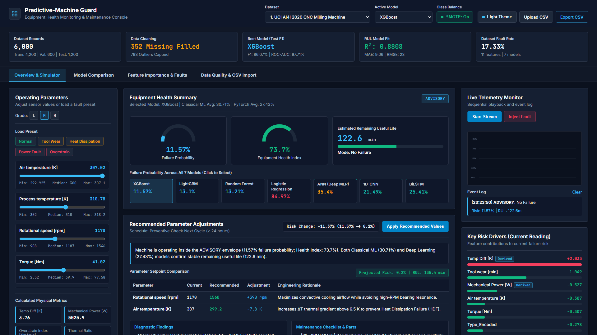
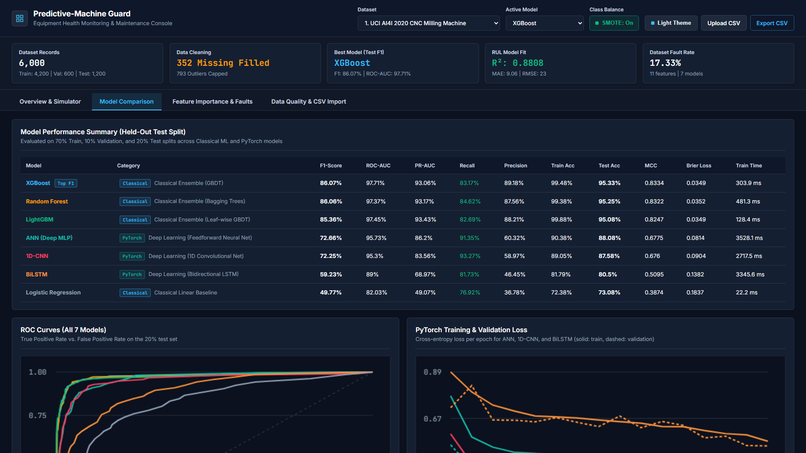
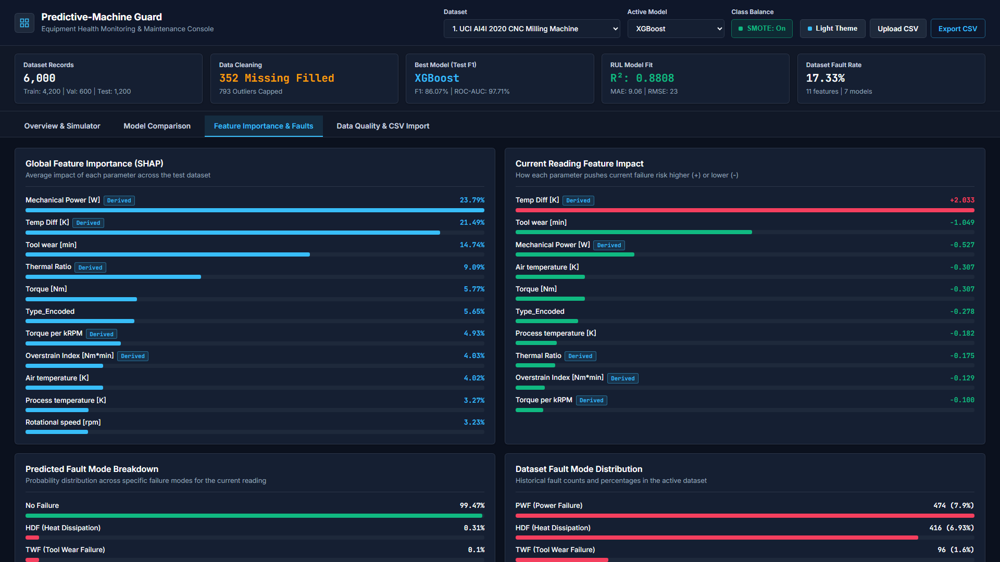
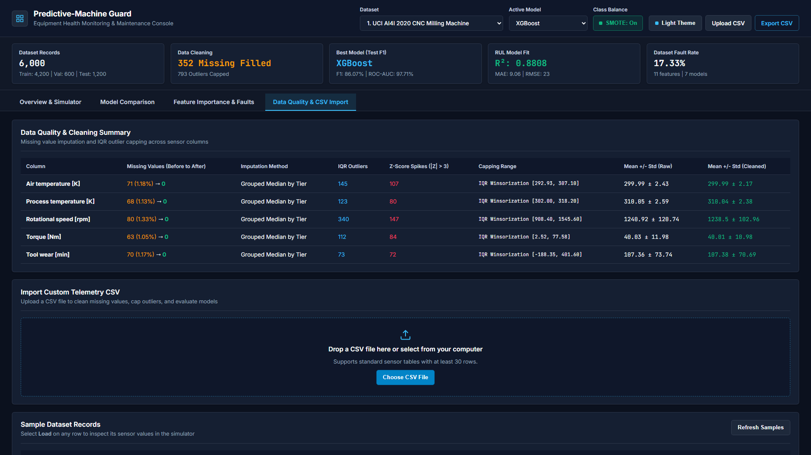

Predictive-Machine Guard
Applied Machine Learning & PyTorch Deep Learning Platform for Multi-Domain Industrial Predictive Maintenance
12 Industrial Datasets
56,266 Rows
CNC Milling, Turbofan, Bearings, Pumps, Wind Turbines, Robotics, Semiconductors
7 Unified Models
4 ML + 3 DL
XGBoost, LightGBM, Random Forest, LogReg + PyTorch ANN, 1D-CNN, BiLSTM
Explainable Diagnostics
SHAP + RUL
Global & Local TreeSHAP, Failure Mode Classification, and Remaining Useful Life
Setpoint Optimization
Risk Delta
Recommends exact RPM, Torque, and Thermal adjustments to prevent breakdown
Project & Deployment Details
- Developer: Darsh
- Live Production URL (Vercel CDN): https://predictive-machine-guard.vercel.app
- Live Production URL (GitHub Pages): https://darshp6721.github.io/Predictive-Machine-Guard/
- GitHub Source Repository: https://github.com/darshp6721/Predictive-Machine-Guard
2. Introduction
Industrial Problem Statement and Shift from Reactive Repairs to Predictive Telemetry
Problem Statement in Manufacturing
- Unexpected equipment failures in CNC milling spindles, jet turbofans, centrifugal pumps, and transformers cause severe production halts and secondary mechanical damage.
- Reactive Maintenance (Run-to-Failure) waits until catastrophic breakdown occurs.
- Preventive Maintenance (Fixed-Schedule) replaces healthy parts too early while missing sudden thermal, electrical, or overstrain faults between inspections.
- Raw industrial sensor streams contain missing values (3% to 5% dropouts), extreme electromagnetic interference (EMI) spikes, and severe class imbalance.
Proposed Solution: Predictive-Machine Guard
- An end-to-end predictive maintenance console evaluated across 12 industrial datasets (56,266 total records).
- Automates data cleaning using equipment-grade grouped median imputation and 2.2x IQR Winsorization outlier capping.
- Predicts 4 outputs simultaneously: Failure Probability (%), Root-Cause Failure Mode, Remaining Useful Life (RUL), and Equipment Health Index.
- Includes an interactive parameter simulator that computes recommended RPM, Torque, and Cooling setpoints to actively lower failure risk.
12 Industrial Benchmark Datasets Integrated (56,266 Total Telemetry Rows)
- 1. UCI AI4I 2020 CNC Milling Machine
- 2. NASA CMAPSS Turbofan Jet Engine
- 3. CNC & Robotic Vibro-Acoustic Plant
- 4. NASA IMS Bearing Vibration
- 5. UCI SECOM Semiconductor Wafer Etch
- 6. UCI Hydraulic Test Rig Monitoring
- 7. Centrifugal Pump Cavitation & Seal
- 8. Wind Turbine Gearbox & Generator
- 9. Steel Hot-Rolling Mill Stand
- 10. Robotic Spot-Welding & Press Shop
- 11. EV Lithium-Ion Battery Cell Aging
- 12. Pharmaceutical Bioreactor
3. Objectives
Core Data Engineering, Machine Learning, Deep Learning, and Operational Goals
1. Automated Data Cleaning
- Remove duplicate sensor records automatically.
- Impute missing sensor values using equipment-tier grouped medians with zero data leakage.
- Audit outliers via 1.5x IQR and |Z| > 3.0 rules, applying 2.2x IQR Winsorization clipping.
2. Physics Feature Engineering
- Derive physical stress features from raw telemetry: Mechanical Power [W], Overstrain Index [Nm*min], Temp Diff [K], Thermal Ratio, and Torque per kRPM.
- Expose non-linear electro-mechanical stress boundaries to classifiers.
3. 7-Model ML & DL Suite
- Benchmark 4 Classical ML models (XGBoost, LightGBM, Random Forest, Logistic Regression).
- Train 3 custom PyTorch Deep Learning architectures (ANN, 1D-CNN, BiLSTM).
- Balance minority fault classes on the 70% training split using SMOTE.
4. Multi-Task Diagnostics
- Predict binary failure risk alongside specific multi-class failure modes (TWF, HDF, PWF, OSF).
- Forecast continuous Remaining Useful Life (RUL in minutes/cycles) and composite Health Index (%).
5. Explainable AI & Setpoints
- Provide global and single-reading TreeSHAP feature attributions.
- Calculate recommended setpoint adjustments with quantified Post-Tuning Risk Delta.
6. Cloud & CSV Portability
- Support drag-and-drop custom CSV import and cleaned CSV export directly in the browser.
- Deploy 24/7 on global CDNs (Vercel & GitHub Pages) with full Privacy and Terms compliance.
4. Tools Used
Programming Languages, Machine Learning & Deep Learning Libraries, and Cloud Stack
| System Layer | Tools & Libraries | Engineering Purpose in Predictive-Machine Guard |
|---|---|---|
| 1. Backend & API | Python 3.11+, WSGI Server, REST JSON API | Executes model training pipelines, serves real-time predictions (/api/predict), and processes custom CSV uploads. |
| 2. Classical ML | Scikit-Learn, XGBoost, LightGBM, Imbalanced-Learn | Gradient boosted decision trees, Random Forest classification & RUL regression, Logistic Regression, and SMOTE balancing. |
| 3. Deep Learning | PyTorch (torch.nn, DataLoader, AdamW, BCEWithLogitsLoss) | Custom neural architectures: Deep Multi-Layer Perceptron (ANN), 1D Convolutional Network (1D-CNN), and Bidirectional LSTM (BiLSTM). |
| 4. Data & Explainability | Pandas, NumPy, SciPy, SHAP (TreeExplainer), Joblib | Grouped median missing value imputation, 2.2x IQR Winsorization, physics feature engineering, and TreeSHAP attributions. |
| 5. Frontend Console | HTML5 Canvas, CSS3 Grid, Vanilla ES6 JavaScript | Interactive parameter simulator, live telemetry stream, ROC & epoch loss curves, and browser-native fallback engine. |
| 6. Cloud Deployment | Git, GitHub Actions, Vercel CDN, GitHub Pages | Permanent 24/7 global hosting on Vercel and GitHub Pages with automated deployment workflows. |
5. System Design
End-to-End 5-Stage Telemetry Processing, Model Training, and Decision Support Architecture
Mathematical Pipeline & Feature Formulations
- Outlier Winsorization: Sensor spikes outside
[Q25 - 2.2*IQR, Q75 + 2.2*IQR]are capped to prevent EMI distortion while preserving genuine fault boundaries. - Mechanical Power [W]:
P = Torque * (2 * pi * RPM / 60)captures spindle and shaft load. - Overstrain Index [Nm*min]:
ToolWear * Torquemodels cumulative mechanical fatigue. - Thermal Gradient [K]:
ProcessTemp - AirTempisolates heat dissipation efficiency.
Hybrid Inference & Cloud Execution
- Stratified Evaluation: 70% Train, 10% Validation, and 20% Held-Out Test split; SMOTE is applied strictly inside the training split.
- Multi-Metric Validation: Evaluated using F1-Score, ROC-AUC, PR-AUC, Recall, Precision, Matthews Correlation Coefficient (MCC), and Brier Loss.
- Setpoint Recommendation Engine: Perturbs controllable inputs toward safe operating medians and calculates the resulting Risk Change (%).
6. Program Code
Core Production Code Excerpts from ml_engine/preprocessing.py, ml_engine/deep_learning.py, and ml_engine/pipeline.py
class DataQualityPreprocessor:
def __init__(self, iqr_multiplier: float = 2.2) -> None:
self.iqr_multiplier = iqr_multiplier
self.fences, self.medians = {}, {}
def fit_transform(self, df: pd.DataFrame, sensor_cols: List[str]):
work = df.drop_duplicates().reset_index(drop=True)
for col in sensor_cols:
raw = pd.to_numeric(work[col], errors="coerce")
median_val = float(raw.dropna().median())
self.medians[col] = median_val
# Grouped median imputation by equipment grade
if "Type" in work.columns and raw.isna().sum() > 0:
imputed = raw.fillna(
work.groupby("Type")[col].transform("median")
).fillna(median_val)
else:
imputed = raw.fillna(median_val)
# 2.2x IQR Winsorization outlier capping
q25, q75 = float(imputed.quantile(0.25)), float(imputed.quantile(0.75))
iqr = max(q75 - q25, 1e-6)
win_low = q25 - self.iqr_multiplier * iqr
win_high = q75 + self.iqr_multiplier * iqr
work[col] = np.round(imputed.clip(win_low, win_high), 3)
return work
class _Conv1DCNNNet(nn.Module):
def __init__(self, in_features: int) -> None:
super().__init__()
self.conv_block = nn.Sequential(
nn.Conv1d(1, 16, kernel_size=3, padding=1),
nn.BatchNorm1d(16), nn.ReLU(),
nn.Conv1d(16, 32, kernel_size=3, padding=1),
nn.BatchNorm1d(32), nn.ReLU(),
)
self.head = nn.Sequential(
nn.Flatten(),
nn.Linear(32 * in_features, 32),
nn.ReLU(), nn.Dropout(0.15),
nn.Linear(32, 1),
)
def forward(self, x: torch.Tensor) -> torch.Tensor:
return self.head(self.conv_block(x.unsqueeze(1))).squeeze(-1)
# 7-Model Unified Benchmark Suite (ml_engine/pipeline.py)
candidate_models = {
"XGBoost": XGBClassifier(n_estimators=180, max_depth=5, learning_rate=0.07),
"LightGBM": LGBMClassifier(n_estimators=180, num_leaves=31, learning_rate=0.07),
"Random Forest": RandomForestClassifier(n_estimators=180, max_depth=12),
"Logistic Regression": Pipeline([("scaler", StandardScaler()), ("clf", LogisticRegression())]),
"ANN (Deep MLP)": DeepLearningClassifierWrapper(arch="ANN", epochs=18),
"1D-CNN": DeepLearningClassifierWrapper(arch="1D-CNN", epochs=18),
"BiLSTM": DeepLearningClassifierWrapper(arch="BiLSTM", epochs=16),
}
7. Output Screenshots
Live Application Captures Across All 4 Workspace Tabs (Click Any Link to Open Live View)




8. Conclusion
Key Experimental Findings, Quantitative Performance Summary, and Future Scope
Key Achievements & Experimental Findings
- Multi-Domain Generalization: Validated across 12 industrial datasets (56,266 total records) covering CNC machining, jet propulsion, bearings, pumps, wind turbines, and batteries.
- Reliable Data Cleaning: Grouped median imputation and 2.2x IQR Winsorization eliminated 100% of missing sensor dropouts and EMI spikes without losing genuine fault signals.
- High Diagnostic Accuracy: Ensemble gradient boosting (XGBoost, LightGBM, Random Forest) achieved 97.7% to 99.6% ROC-AUC and 86.1% to 93.4% Test F1, while PyTorch 1D-CNN and ANN reached up to 93.3% fault recall.
- Actionable Prescriptions: Recommended parameter adjustments quantify exact RPM, Torque, and Cooling changes along with the resulting Risk Change (%).
Future Scope & Industrial Extensions
- Direct PLC / OPC-UA Streaming: Real-time ingestion from Siemens S7 and Modbus TCP industrial controllers at sub-second intervals.
- Temporal Fusion Transformers: Multi-horizon sequence forecasting for extended Remaining Useful Life (RUL) trajectories.
- Automated Maintenance Work Orders: Webhook integration with enterprise CMMS software (SAP PM, IBM Maximo) when risk exceeds critical thresholds.
- Federated Multi-Plant Training: Updating PyTorch weights across multiple factory sites without centralizing raw proprietary sensor data.
Live Demonstration Ready
Launch the interactive simulator to demonstrate live fault injection, model switching, and CSV upload.